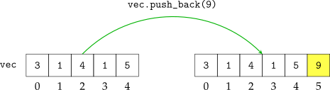
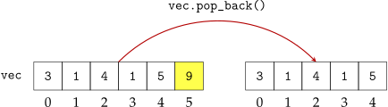
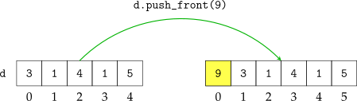
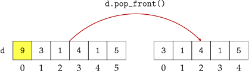
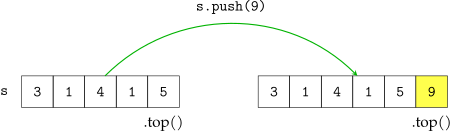
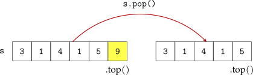
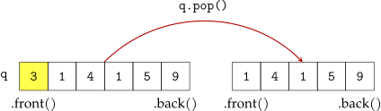
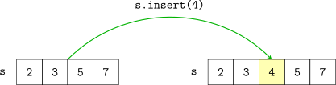
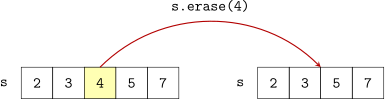

La biblioteca estándar de C++ proveé una colección de estructuras de datos útiles para el manejo de datos. Todas estas estructuras funcionan como contenedores de datos, para los cuales es posible insertar, remover y consultar elementos. Cada una de estas estructuras varía en la manera en que se realizan estas operaciones y en el costo computacional asociado a éstas.
Estas estructuras están divididas en dos familias principales: los contenedores secuenciales y los contenedores asociativos.
Los contenedores secuenciales mantienen los elementos dentro de ellos en una secuencia lineal simple, como se muestra en la siguiente figura.
Cada operación de inserción y remoción de un elemento en un contenedor secuencial opera sobre uno de los extremos de esta secuencia.
Al primer elemento (el extremo izquierdo en el diagrama) dentro de la secuencia se le denomina el front y al último (el extremo derecho en el diagrama) se le denomina el back.
std::vector es un contenedor secuencial que permite inserciones y remociones
del último elemento (el back de la secuencia). Permite también acceso rápido a
cualquier elemento de la secuencia dado su posición (iniciando desde la posición
0). Es la estructura de la biblioteca estándar más usada. En efecto proveé un
arreglo dinámico al cuál es posible expandir y reducir en su extremo
derecho.
Declaración e inicialización
existen varias formas de declarar e inicializar un std::vector. se listan a
continuación.
listando los elementos iniciales. se puede declarar e inicializar un
std::vector con un conjunto definido de valores iniciales dados entre
corchetes, de la siguiente manera:
std::vector<int> vec{3, 1, 4, 1, 5};
vec tiene tamaño 5 y contiene los elementos: {3, 1, 4, 5}.
definiendo su tamaño y un valor inicial para todos los elementos.
se puede proporcionar el tamaño deseado del std::vector y el
valor a colocar en cada uno de sus posiciones, en este caso estos
argumentos se escriben entre paréntesis, de la siguiente manera:
std::vector<int> vec(3, 1);
vec tiene tamaño 3 y contiene los elementos: {1, 1, 1}.
declarándo como un vector vacío. si no se le proporciona ningún argumento, como se muestra a continuación:
std::vector<int> vec;
vec no contiene ningún elemento.
Acceso a sus elementos
se pueden acceder y modificar cualquiera de los elementos de un
std::vector de las siguientes tres maneras:
Por su índice. Si se tiene un std::vector llamado vec es posible
acceder a cualquiera de sus elementos dado su índice i simplemente
escribiendo vec[i]. Este acceso permite tanto lectura como escritura
de los elementos del vector.
std::vector<int> vec{3, 1, 4, 1, 5}; /* Imprime el tercer (indice 2) elemento de vec, que es 4 */ std::cout << vec[2] << ’\n’; /* Modifica el cuarto elemento de vec */ vec[3] = 7; /* vec ahora contiene {3, 1, 4, 7, 5} */
Acceso a los extremos con back y front. Es posible también acceder al
primer y último elemento de un vector vec usando los métodos front() y
back(). Este tipo de acceso también permite lectura y escritura de los
elementos del arreglo:
std::vector<int> vec{3, 1, 4, 1, 5}; /* Imprime el ultimo elemento de vec que es 5 */ std::cout << vec.back() << ’\n’; /* Modifica el ultimo elemento de vec */ vec.back() = 7; /* vec ahora contiene {3, 1, 4, 1, 7} */ /* Esto ahora imprime 7 */ std::cout << vec.back() << ’\n’;
Inserción y remoción de elementos en el back del vector.
Es posible agregar y eliminar elementos en el extremo derecho del vector (su
back). Esto se logra usando los métodos push_back() y pop_back() que agregan
y eliminan elementos del back del vector, respectivamente.
Se muestra un ejemplo de su uso a continuación.
std::vector<int> vec{3, 1, 4, 1, 5}; vec.push_back(9); /* vec ahora contiene los elementos {3, 1, 4, 1, 5, 9} */ vec.pop_back(); /* vec ahora contiene los elementos {3, 1, 4, 1, 5} */


std::deque es un contenedor secuencial que extiende las capacidades
del std::vector. Todas las operaciones del std::vector mencionadas
anteriormente son aplicables a un std::deque, incluyendo la manera en que se
declara e inicializa, la inserción y remoción del back, así como el acceso a sus
elementos.
El std::deque agrega un nuevo par de métodos que insertan y remueven
elementos del front de la secuencia.
Inserción y remoción de elementos en el front del deque.
Es posible agregar y eliminar elementos en el extremo izquierdo del deque
(su front). Esto se logra usando los métodos push_front() y pop_front() que
agregan y eliminan elementos del front del deque, respectivamente.
Se muestra un ejemplo de su uso a continuación.
std::deque<int> d{3, 1, 4, 1, 5}; d.push_front(9); /* vec ahora contiene los elementos {9, 3, 1, 4, 1, 5} */ d.pop_front(); d.pop_front(); /* vec ahora contiene los elementos {1, 4, 1, 5} */


El std::stack es una forma restringida del std::deque que solo permite acceso,
inserciones, remociones del back. Simula una estructura de pila en la que solo se
puede acceder y modificar el último elemento insertado en el contenedor. El
std::stack usa el nombre top (la cima de la pila) en lugar de back para referirse a
su último elemento.
Declaración e inicialización de std::stack.
Solo existen dos maneras de declarar e inicializar un std::stack:
Inicializándolo como una pila vacía o inicializándolo como una copia de un
std::deque.
Como pila vacía.
std::stack<int> s; /* s es una pila vacia */
Como copia de un std::deque.
std::deque<int> d{2, 7, 1, 8}; std::stack<int> s(d); /* s es una pila que contiene {2, 7, 1, 8} su top() es 8 */
Acceso y modificación de la cima.
Como se mencionó anteriormente, el std::stack solo permite acceso y
modificaciones en su último elemento. A su último elemento lo denomina su top
(la cima de la pila).
Método top(). Con este método se obtiene acceso a la cima y también es posible modificarla.
std::deque<int> d{2, 7, 1, 8}; std::stack<int> s(d); /* s es una pila que contiene {2, 7, 1, 8} */ /* Imprime la cima de la pila, que es 8 */ std::cout << s.top() << ’\n’; s.top() = 12; /* Imprime la cima de la pila, que ahora es 12 */ std::cout << s.top() << ’\n’;
Método push() y pop(). Los métodos push() y pop() agregan y
remueven (respectivamente) elementos de la cima de la pila.
std::stack<int> s; /* s es una pila vacia. */ s.push(1); s.push(2); /* s contiene {1, 2} */ /* la cima de la pila es 2 */ std::cout << s.top() << ’\n’; /* se remueve el elemento en la cima de la pila (que era 2) */ s.pop(); /* la cima ahora es 1 */ std::cout << s.top() << ’\n’;


El std::queue es una versión restringida del std::deque que solo permite
inserciones en su último elemento (su back) y remociones de su primer elemento
(su front). Estas operaciones simulan una cola: Los primeros elementos que
entran a la estructura (al ser insertados en el back de la cola) son los primeros que
salen (al ser removidos por el front).
Declaración e inicialización. Los std::queue se declaran e inicializan de
las siguientes formas:
Método push(). El método push() inserta un nuevo elemento al final de la
cola.
std::queue<int> q; q.push(1); q.push(2); q.push(3); /* La cola q contiene los elementos {1, 2, 3} */
Método pop(). El método pop() remueve al elemento de enfrente de la
cola.
std::queue<int> q; q.push(1); q.push(2); q.push(3); /* La cola q contiene los elementos {1, 2, 3} */ q.pop(); /* La cola q contiene los elementos {2, 3} */
Acceso y modificación del primer y último elemento. Al igual que el
std::vector y el std::deque el std::queue provee acceso a su primer y
último elemento a través de los métodos front() y back(). Este acceso es
tanto de lectura como escritura.
std::queue<int> q; q.push(1); q.push(2); q.push(3); /* La cola q contiene los elementos {1, 2, 3} */ q.front(); // 1 q.back(); // 3 q.front() = 5; /* La cola q ahora contiene los elementos {5, 2, 3} */

Aunque los contenedores secuenciales son extremadamente útiles para una gran variedad de situaciones, son incapaces de responder preguntas simples como ¿Mi contenedor contiene al elemento X?. Responder a estas preguntas requeriría en el peor de los casos recorrer todo el contenedor para encontrar el elemento X.
Para responder esta clase de preguntas y más, existen los contenedores asociativos. Son llamados de esta manera porque asocian a sus elementos con datos sobre ellos.
El contenedor std::set modela un conjunto (en el sentido matemático).
Mantiene una colección de elementos de los que fácilmente puede responder la
pregunta de si un elemento dado está presente o no dentro del conjunto. El
conjunto no permite elementos repetidos, es decir, cada elemento solo puede
estar o no estar dentro del conjunto. No es posible que un elemento dado esté
más de una vez dentro del conjunto.
A diferencia de los contenedores secuenciales, el conjunto que mantiene un
std::set no tiene un orden relacionado en absoluto con el orden de inserción.
En su lugar, el std::set mantiene sus elementos en orden de menor a
mayor.
Declaración e inicialización. Las principales maneras de declarar e
inicializar un std::set son las siguientes:
Inserción de elementos al conjunto. Para insertar elementos al conjunto
dado, se usa el método insert().
std::set<int> s; for (int i = 0; i < 4; ++i) { s.insert(i * i); } // s contiene los elementos {0, 1, 4, 9}
La inserción se realiza preservando el orden de menor a mayor.
std::set<int> s{2, 3, 5, 7}; s.insert(4); // s contiene {2, 3, 4, 5, 7}

Eliminación de elementos del conjunto. De manera similar, para
eliminar un elemento de un conjunto dado se usa el método erase().
std::set<int> s; for (int i = 0; i < 4; ++i) { s.insert(i * i); } s.erase(1); /* el conjunto ahora contiene {0, 4, 9} */ s.erase(5); // no hace nada ya que s no contiene a 5. /* el conjunto sigue conteniendo a {0, 4, 9} */
La eliminación también se realiza preservando el orden de menor a mayor.
std::set<int> s{2, 3, 4, 5, 7}; s.erase(4); // s contiene {2, 3, 5, 7}

Evaluación de pertenencia de un elemento dado al conjunto. Se puede
evaluar si un elemento dado pertenece al conjunto o no con el método
contains().
std::set<int> s; for (int i = 0; i < 4; ++i) { s.insert(i * i); } s.contains(-1); // false s.contains(9); // true s.contains(15); // false
Obtener el número de elementos de un set. Se usa el método size().
std::set<int> s; for (int i = 0; i < 4; ++i) { s.insert(i * i); } for (int i = 1; i < 5; ++i) { s.insert(i * i); } s.size(); // 5
El std::map es un contenedor que mantiene un conjunto de asociaciones entre
llaves únicas y valores. Son capaces de agregar y eliminar asociaciones así
como responder preguntas del tipo ¿A qué valor está asociada la llave
X?.
En lo que sigue, usaremos como ejemplo un map que mantiene la asociación entre nombres de números en Inglés (como one, two, twelve) con su valor numérico representado como un int (1, 2, 12 respectivamente para los valores mostrados anteriormente).
Declaración e inicialización .
Como un map vacío. Se puede declarar un map vacío: un map sin ninguna asociación dada. Al declararse se escribe primero el tipo de dato de las llaves y luego el de los valores.
std::map<std::string, int> m; // m es un map vacio que asocia cadenas a enteros.
Con una lista predefinida de asociaciones. Se puede declarar y establecer un conjunto inicial de asociaciones de la siguiente manera.
std::map<std::string, int> m{ {"one", 1}, {"two", 2}, {"twelve", 12}, }; // m contiene las asocaciones: // one -> 1 // two -> 2 // twelve -> 12
Obtención del valor asociado a una llave dada. Se puede obtener el valor
asociado a una llave usando el operador [].
std::map<std::string, int> m{ {"one", 1}, {"two", 2}, {"twelve", 12}, }; // m contiene las asocaciones: // one -> 1 // two -> 2 // twelve -> 12 m["twelve"]; // vale 12
En el caso de que no exista la asociación solicitada, se inserta una nueva con un valor por defecto inicializado en 0 (el valor por defecto depende del tipo de dato del valor).
std::map<std::string, int> m{ {"one", 1}, {"two", 2}, {"twelve", 12}, }; // m contiene las asocaciones: // one -> 1 // two -> 2 // twelve -> 12 m["twelve"]; // vale 12 m["que"]; // vale 0 // m contiene las asocaciones: // one -> 1 // two -> 2 // twelve -> 12 // que -> 0
Determinar si el map contiene un valor asociado a una llave dada. Se
puede obtener valor booleano que nos dice si el map contiene actualmente
una asociación entre una llave dada o no. Esto se hace con el método
contains().
std::map<std::string, int> m{ {"one", 1}, {"two", 2}, {"twelve", 12}, }; // m contiene las asocaciones: // one -> 1 // two -> 2 // twelve -> 12 m.contains("twelve"); // true m.contains("que"); // false
Establecer una asocación. Se puede establecer una nueva asociación o
sobreescribir una anterior con el operador [].
std::map<std::string, int> m{ {"one", 1}, {"two", 2}, {"twelve", 13}, }; // m contiene las asocaciones: // one -> 1 // two -> 2 // twelve -> 13 m["three"] = 3; // m contiene las asocaciones: // one -> 1 // two -> 2 // three -> 3 // twelve -> 13 m["twelve"] = 12; // m contiene las asocaciones: // one -> 1 // two -> 2 // three -> 3 // twelve -> 12
Es posible iterar sobre los contenedores std::vector, std::deque, std::set y
std::map de la misma manera con el denominado for basado en rangos, como se
muestra a continuación:
std::vector<int> v{1, 1, 2, 3, 5}; /* for basado en rangos sobre ‘‘v’’ */ for (auto vi: v) { std::cout << vi << ’ ’; } std::cout << ’\n’; // imprime 1 1 2 3 5 \n std::set<int> s{1, 1, 2, 3, 5}; /* lo mismo sobre s */ for (auto si: s) { std::cout << si << ’ ’; } std::cout << ’\n’; // imprime 1 2 3 5 \n
Este recorrido se hace sobre todos los elementos del contenedor dado por copia. Esto quiere decir que cualquier modificación que se realice sobre los elementos del contenedor durante la ejecución del for no se mantendrán saliendo de éste:
std::vector<int> v{1, 1, 2, 3, 5}; for (auto vi: v) { vi *= 2; // multiplica vi por 2 } // v sigue siendo {1, 1, 2, 3, 5}
Para poder modificar los elementos del arreglo se necesita declarar a la variable de iteración como una referencia. Esto se escribe de la siguiente manera en C++:
std::vector<int> v{1, 1, 2, 3, 5}; for (auto& vi: v) { vi *= 2; // multiplica vi por 2 } // v ahora es {2, 2, 4, 6, 10}
Iterar sobre un std::map es un tanto diferente ya que no contiene elementos
simples sino pares de llave/valor que representan las asociaciones que modela.
Para iterar sobre los pares de llave/valor presentes en un map se usan los
denominados structured bindings:
std::map<std::string, int> figuresides{ {"triangle", 3}, {"square", 4}, {"pentagon", 5}, {"hexagon", 6} }; for (auto [figure, sides]: figuresides) { std::cout << figure << " has " << sides << " sides\n"; }
Es posible modificar los valores de un map dentro de un for de este tipo nuevamente declarando a las variables de iteración como referencias, sin embargo, esto no permite modificar las llaves.
std::map<std::string, int> figuresides{ {"triangle", 3}, {"square", 4}, {"pentagon", 5}, {"hexagon", 6} }; for (auto &[figure, sides]: figuresides) { sides *= 2; // legal figure += figure; // ilegal }
La biblioteca estándar de C++ generaliza el concepto de apuntador proveyente de C. Se definen nuevos objetos denominados iteradores que funcionan en varios aspectos como apuntadores mejorados.
Los iteradores modelan referencias a elementos individuales de un contenedor. Con ellos, es posible modificar el elemento referenciado o encontrar elementos cercanos (cada contenedor define esta cercanía de distinta forma) a éste.
Las funciones de búsqueda de contenedores y también múltiples funciones de modificación operan sobre iteradores o los retornan como valores.
Cada contenedor tiene un tipo de iterador diferente, pero todos siguen el
mismo formato: Los iteradores que representan referencias a elementos de un
std::vector<int> son de tipo std::vector<int>::iterator, los iteradores que
representan referencias a elementos de un std::set<int> son de tipo
std::set<int>::iterator, etc.
Uso del auto.
La palabra clave auto en C++ se usa para pedir al compilador que infiera el
tipo de dato dado el valor de inicialización. Dado lo extenso que es escribir
std::vector<int>::iterator todo el tiempo, en los ejemplos siguientes
comenzaré usando la notación completa pero luego pasaré a usar la notación
equivalente abreviada de auto.
El manejo de iteradores para estas dos estructuras es muy similar entre sí. Ambas tienen métodos para obtener iteradores al inicio y al final del contenedor.
Método begin() y end(). El método begin() obtiene un iterador que
apunta al inicio de la secuencia (al inicio del primer elemento), mientras
que el método end() obtiene un iterador que apunta al final de la secuencia
(al final del último elemento).
std::vector<int> v{3, 1, 4, 1, 5}; std::vector<int>::iterator beg = v.begin(); std::vector<int>::iterator end = v.end();
Incremento y decremento. Los iteradores se pueden mover una posición
hacia efrente o hacia atrás usando los operadores de preincremento ++ y
predecremento --. Estos operadores afectan al iterador sobre el que se
aplican.
std::vector<int> v{3, 1, 4, 1, 5}; std::vector<int>::iterator ptr = v.begin(); // ptr apunta a 3 ++ptr; // ptr apunta a 1 ++ptr; // ptr apunta a 4 --ptr; // ptr apunta a 3
Movimiento a N pasos. Si se le suma una cantidad entera n a un iterador,
se obtiene otro iterador que apunta al mismo lugar que el iterador original
pero desplazado en n posiciones (hacia enfrente o hacia atrás dependiendo
el signo de n).
std::vector<int> v{3, 1, 4, 1, 5}; std::vector<int>::iterator ptrA = v.begin(); // ptrA apunta a 3 std::vector<int>::iterator ptrB = v.begin() + 2; // ptrA sigue apuntando a 3 // ptrB apunta a 4
Diferencia entre dos iteradores. Se puede obtener la diferencia entre dos iteradores, lo que resulta en la cantidad de elementos que se encuentra entre ambos.
std::vector<int> v{3, 1, 4, 1, 5}; auto ptrA = v.begin(); auto ptrB = v.begin() + 2; auto ptrC = v.end(); ptrB - ptrA; // 2 ptrC - ptrB; // 3 ptrC - ptrA; // 5
Derreferenciación de un iterador. Se puede obtener el valor al
que apunta un iterador usando el operador de derreferenciación
estándar *. Esto obtiene el elemento a cuyo inicio apunta el iterador.
Esto implica, en particular, que derreferenciar el end() es ilegal
ya que éste apunta al final del último elemento. Para obtener la
referencia al inicio del último elemento se puede usar v.end() - 1.
std::vector<int> v{3, 1, 4, 1, 5}; *(v.begin()); // 3 *(v.begin() + 2); // 4 *(v.end() - 1); // 5 *(v.end()); // ERROR, v.end() apunta al *final*
Este tipo de acceso también permite la modificación de los elementos referenciados.
std::vector<int> v{3, 1, 4, 1, 5}; *(v.begin()) = 0; *(v.begin() + 2) = 0; // v ahora contiene {0, 1, 0, 1, 5}
Los iteradores a std::set son idénticos en su uso en varios aspectos.
Métodos begin() y end(). Iguales a los métodos descritos anteriormente.
std::set<int> s{3, 1, 4, 1, 5, 7}; // s contiene {1, 3, 4, 5, 7} (en ese orden) std::set<int>::iterator beg = s.begin(); // beg apunta al inicio del 1. std::set<int>::iterator end = s.end(); // end apunta al *final* del 7.
Incremento y decremento. De igual manera, se usa el preincremento ++ y
el predecremento -- para mover un iterador al siguiente o anterior
elemento, respectivamente.
std::set<int> s{3, 1, 4, 1, 5, 7}; // s contiene {1, 3, 4, 5, 7} (en ese orden) auto ptr = s.begin(); // ptr apunta al inicio de 1 ++ptr; ++ptr; // ptr apunta al inicio de 4 --ptr; // ptr apunta al inicio de 3
Derreferenciación. Esto es igual. Sin embargo, este tipo de acceso es solo de lectura en lugar de lectura y escritura como en el caso anterior.
std::set<int> s{3, 1, 4, 1, 5, 7}; // s contiene {1, 3, 4, 5, 7} (en ese orden) auto ptr = s.begin(); *ptr; // 1 ++ptr; *ptr; // 3 *ptr = 2; // Error
A pesar de sus similaridades, los iteradores a std::set no tienen las mismas
capacidades que los iteradores a std::vector. En particular, no son capaces de
realizar de manera eficiente el movimiento a N pasos y diferencia entre dos
iteradores.
Es posible realizar estas dos operaciones de una manera un tanto diferente, sin embargo, se debe notar que son mucho más costosas computacionalmente que sus análogos en el vector, por lo que se tienen que usar con consideración de su posible costo en el peor de los casos.
Movimiento a N pasos. Se puede obtener un iterador a un std::set
desplazado N pasos con las funciones std::next y std::prev.
Esto tiene un costo temporal proporcional al número de pasos.
std::set<int> s{3, 1, 4, 1, 5, 7}; // s contiene {1, 3, 4, 5, 7} (en ese orden) auto ptrA = s.begin(); auto ptrB = std::next(s.begin(), 2); auto ptrC = std::prev(s.end(), 2); /* ptrA apunta al inicio de 1 ptrB apunta al inicio de 4 ptrC apunta al inicio de 5 */
Diferencia entre dos iteradores. Para lograr esto con los iteradores a
conjuntos, se usa la función std::distance. Esto tiene un costo temporal
proporcional al número de elementos entre los dos iteradores dados.
std::set<int> s{3, 1, 4, 1, 5, 7}; // s contiene {1, 3, 4, 5, 7} (en ese orden) auto ptrA = s.begin(); auto ptrB = std::next(s.begin(), 2); auto ptrC = std::prev(s.end(), 2); std::distance(ptrA, ptrB); // 2 std::distance(ptrB, ptrC); // 1 std::distance(ptrA, ptrC); // 3
Existen funciones que ordenan y realizan búsquedas eficientes sobre secuencias ordenadas.
Ordenar un std::vector. Para ordenar de menor a mayor los elementos de
un std::vector se usa la función std::sort. Recibe como entrada dos
iteradores que apuntan respectivamente al inicio y al final de la secuencia
que se quiere ordenar.
std::vector<int> v{3, 1, 4, 1, 5}; std::sort(v.begin(), v.end()); // ordena todos los elementos // v ahora contiene {1, 1, 3, 4, 5}
Buscar el inicio del primer elemento mayor o igual a un valor dado. Se
puede encontrar un iterador que apunta al inicio del primer elemento que
es mayor o igual a un valor dado con la función std::lower_bound. La
secuencia dada debe estar ordenada para que esto funcione correctamente.
Recibe como argumentos el inicio y el final de la secuencia y el valor
buscado.
std::vector<int> v{1, 5, 7, 7, 11, 30}; auto ptrA = std::lower_bound(v.begin(), v.end(), 6); // ptrA apunta al primer 7 auto ptrB = std::lower_bound(v.begin(), v.end(), 11); // ptrB apunta a 11
Buscar el final del último elemento menor o igual a un valor dado. De
igual manera, se puede obtener un iterador al final del último elemento que
es menor o igual a un valor dado con la función std::upper_bound.
std::vector<int> v{1, 5, 7, 7, 11, 30}; auto ptrA = std::upper_bound(v.begin(), v.end(), 8); // ptrA apunta al final del segundo 7 y al inicio del 11 auto ptrB = std::upper_bound(v.begin(), v.end(), 5); // ptrB apunta al final del 5 y al inicio del 7
El std::set es un contenedor que mantiene sus elementos ordenados
automáticamente, por lo que siempre le es posible realizar operaciones de
búsqueda eficientes como las de std::lower_bound() y std::upper_bound().
Buscar el inicio del primer elemento mayor o igual a un valor dado. Se
usa el método lower_bound() que recibe el elemento buscado como
argumento.
std::set<int> s{1, 5, 7, 11, 30}; auto ptrA = s.lower_bound(6); // ptrA apunta al inicio del 7 auto ptrB = s.lower_bound(11); // ptrB apunta al inicio del 11
Buscar el final del último elemento menor o igual a un valor dado. Se usa
el método upper_bound() que recibe el elemento buscado como
argumento.
std::set<int> s{1, 5, 7, 11, 30}; auto ptrA = s.upper_bound(12); // ptrA apunta al final del 11 y al inicio del 30 auto ptrB = s.upper_bound(5); // ptrB apunta al final del 5 y al inicio del 7